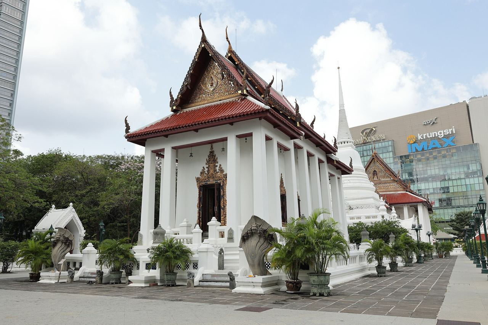
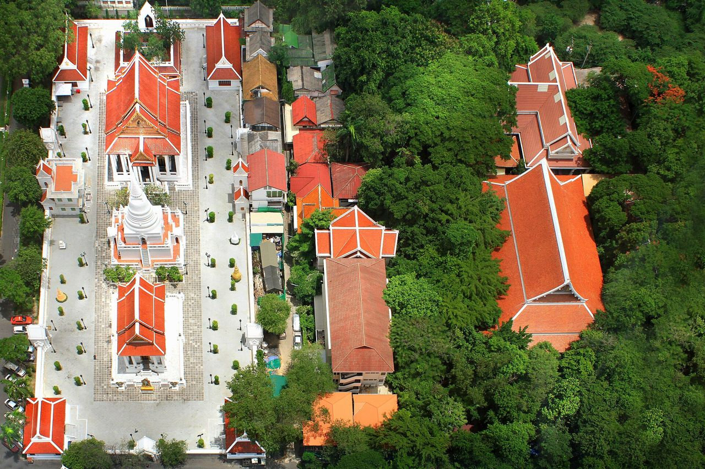

วัดปทุมวนาราม
ราชวรวิหาร
พระอารามหลวงกลางย่านสยาม ที่รัชกาลที่ 4 โปรดให้สร้างขึ้นคู่กับวังสระปทุม
ประวัติโดยย่อ
จากทุ่งบัวสู่ใจกลางเมือง
พื้นที่นี้เดิมเป็นทุ่งนอกพระนคร รัชกาลที่ 4 โปรดให้ขุดสระและสร้างวังสระปทุมเป็นที่ประทับแรม แล้วสร้างวัดขึ้นเคียงกัน ถวายเป็นพระราชกุศลแด่สมเด็จพระเทพศิรินทราบรมราชินี
- พ.ศ. 2396ขุดสระปทุม
- พ.ศ. 2400เริ่มสร้างวัดทางทิศตะวันตกของสระนอก โดยมีสมเด็จเจ้าพระยาบรมมหาพิไชยญาติ (ทัต บุนนาค) เป็นแม่กอง และพระยาสามภพพ่าย (หนู หงสกุล) เป็นนายงาน นิมนต์พระสงฆ์คณะลาวจากวัดบวรนิเวศมาจำพรรษา โดยมีพระครูปทุมธรรมธาดา (ก่ำ) เป็นเจ้าอาวาสองค์แรก ดำรงตำแหน่งถึง พ.ศ. 2437
- พ.ศ. 2404การก่อสร้างแล้วเสร็จ แต่งานสมโภชต้องเลื่อนออกไป เพราะสมเด็จพระเทพศิรินทราบรมราชินีสวรรคต
- พ.ศ. 2408อัญเชิญพระเสริมมาประดิษฐานที่วัด
- พ.ศ. 2410จัดพิธีฉลองพระอารามเป็นเวลา 5 คืน เริ่มวันที่ 21 ธันวาคม
- พ.ศ. 2536เปิดศาลาพระราชศรัทธาในสวนป่าของวัดเป็นที่ปฏิบัติธรรม และสมเด็จพระญาณวชิโรดม (อมร ญาโณทโย) เริ่มดำรงตำแหน่งเจ้าอาวาส
- พ.ศ. 2556ได้รับรางวัลอนุรักษ์สถาปัตยกรรมดีเด่น จากสมาคมสถาปนิกสยามในพระบรมราชูปถัมภ์

ความสงบกลางย่านสยาม
วัดปทุมวนาราม หรือชื่อเดิมว่าวัดสระปทุม เป็นพระอารามหลวงชั้นตรี ชนิดราชวรวิหาร สังกัดธรรมยุติกนิกาย
วัดตั้งอยู่ระหว่างย่านสยามกับย่านราชประสงค์ ท่ามกลางอาคารสูง แต่ยังคงมีสระน้ำและสวนป่าร่มรื่นให้เข้ามาสักการะและปฏิบัติธรรม
ประวัติศาสตร์ร่วมสมัย
เขตอภัยทาน พ.ศ. 2553
ในเหตุการณ์ความไม่สงบทางการเมืองบริเวณแยกราชประสงค์ วัดได้รับการประกาศให้เป็นเขตอภัยทาน เพื่อรองรับและรักษาผู้บาดเจ็บและผู้หลบภัย
วันที่ 19 พฤษภาคม พ.ศ. 2553 มีผู้เสียชีวิตภายในวัด 6 ราย ศาลอาญากรุงเทพใต้ไต่สวนชันสูตรพลิกศพเมื่อ พ.ศ. 2556 ระบุว่าเกิดจากกระสุนปืนความเร็วสูงจากแนวรางรถไฟฟ้าบีทีเอสบริเวณหน้าวัด